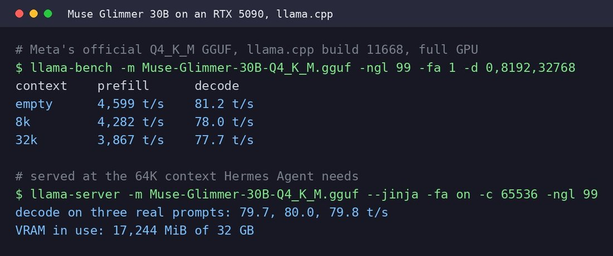

Muse Glimmer 30B, Meta's new open-weight agent model, runs fully on one RTX 5090 with room to spare, and keeps its speed as the context fills up.
I ran Meta's own 4-bit GGUF on llama.cpp, then served it at the 64K context Hermes Agent needs.
> decode barely moves between an empty context and 32k, which matters for an agent: its context grows with every tool call.
> however, I've only measured speed so far. how well it handles real agent work is the next test.
to point your Hermes Agent at it: start llama-server with --jinja, then `hermes model`, Custom endpoint, http://localhost:8080/v1
I ran Meta's own 4-bit GGUF on llama.cpp, then served it at the 64K context Hermes Agent needs.
> decode barely moves between an empty context and 32k, which matters for an agent: its context grows with every tool call.
> however, I've only measured speed so far. how well it handles real agent work is the next test.
to point your Hermes Agent at it: start llama-server with --jinja, then `hermes model`, Custom endpoint, http://localhost:8080/v1
